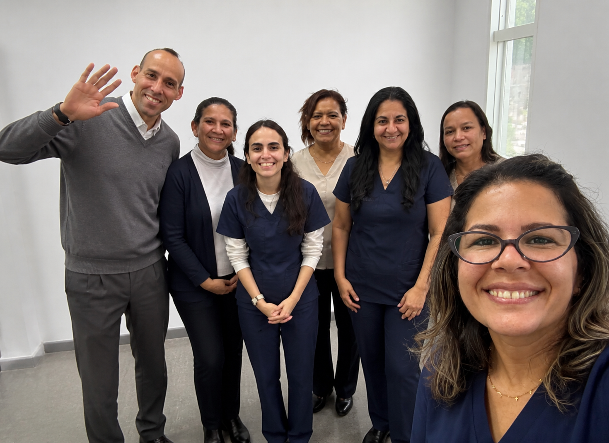

Cuidado en el hogar
Higiene personal, apoyo en vestido, movilización básica, cambios de posición, compañía diaria y supervisión general del bienestar.
En Abrazo Mayor acompañamos a las personas mayores en su día a día: en el hogar, en los controles de salud y en los momentos de compañía, siempre con un trato humano, respetuoso y seguro.
Ofrecemos servicios de cuidado domiciliario y acompañamiento a personas mayores, adaptados a las necesidades de cada familia.
Higiene personal, apoyo en vestido, movilización básica, cambios de posición, compañía diaria y supervisión general del bienestar.
Control básico de signos vitales, glucosa, aplicación de insulina y administración de medicamentos indicados por profesionales de salud.
Acompañamiento a consultas médicas, estudios y gestiones relacionadas con la salud y la vida diaria.
Conversación, escucha activa, estimulación cognitiva y contención emocional adaptada a la historia de vida de cada persona mayor.
Cada cuidador cuenta con formación específica y experiencia real en el cuidado de personas mayores. Puede descargar su CV y contactarlos por teléfono, correo o WhatsApp.
Cuidadora de personas mayores – Asunción
10 años de experiencia en cuidado domiciliario, con formación en primeros auxilios, emergencias médicas y seguridad en el entorno de cuidado.
Cuidadora – Itauguá
Responsable y empática, con experiencia en cuidado de personas mayores con dependencia moderada en domicilio.
Cuidadora – Especialista en Alzheimer
9 años de experiencia en cuidado de adultos mayores con Alzheimer y alta dependencia, con fuerte vocación de servicio.
Cuidadora – Manejo de diabetes
5 años de experiencia en cuidado de persona mayor de 80 años con dependencia moderada, con manejo de presión, glucosa e insulina.
Cuidadora – Gestión de salud
Especialista en control de presión, glucosa, administración de insulina y planificación de comidas adaptadas a condiciones médicas.
Cuidador – Acompañamiento social y apoyo diario
Cuidador con perfil formal y cercano, enfocado en acompañamiento social, apoyo en actividades diarias y presencia tranquila para la persona mayor.
Cuidadora de personas mayores
Cuidadora con trato cálido y cercano, enfocada en higiene, compañía y apoyo en actividades de la vida diaria.
Cuidadora – Atención cercana
Cuidadora con experiencia en atención cercana en sala y domicilio, brindando confort, escucha y apoyo en tareas básicas.
El tipo de acompañamiento que brindamos tiene: presencia constante, cuidado respetuoso y apoyo en las tareas de la vida diaria.
Nuestro equipo combina atención práctica y contención emocional, para que la persona mayor se sienta segura y acompañada en su rutina.
Un espacio musical pensado para acompañar a nuestros pacientes mayores con melodías suaves.
Puede reproducir esta selección musical mientras el cuidador se encuentra con la persona mayor. La música ayuda a crear un ambiente tranquilo y familiar.
Algunos ejemplos de valoraciones sobre el cuidado brindado por nuestros profesionales.
“Digna cuidó a nuestra madre con mucha paciencia y respeto. Siempre fue puntual y atenta a los horarios de medicación.”
“Pablina fue una gran ayuda con mi padre con Alzheimer. Supo manejar las rutinas y las crisis con mucha calma.”
“Andrea organizó muy bien los controles de salud y las comidas. Nos sentíamos tranquilos dejándola a cargo.”
Para contratar a alguno de nuestros cuidadores, puede comunicarse directamente al número que aparece en su ficha, o escribirnos para recibir ayuda en la elección de la persona más adecuada para su familiar.
*Los valores por hora son orientativos y pueden ajustarse según el grado de dependencia, la distancia y las tareas acordadas.
